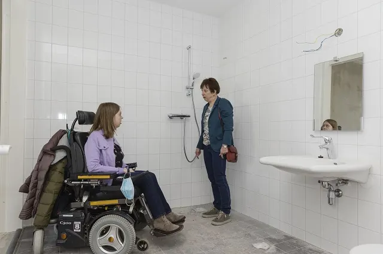
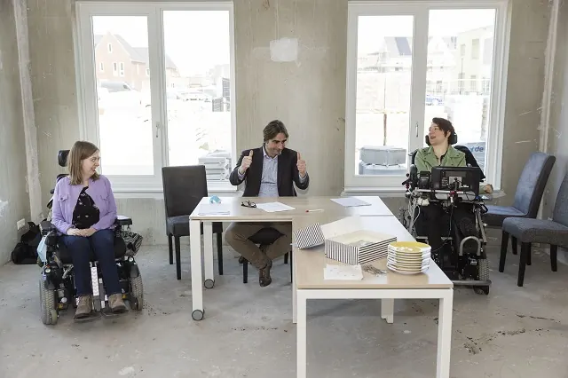

Nieuws ·
Wooninitiatief bewoners met lichamelijke beperking tekent huurcontract

Dit bericht uit ons archief verscheen op 30 april 2021 op NieuwsNijmegen.nl. Data, tijden en prijzen kunnen inmiddels anders zijn.
Bewoners van Mindset regelen zelf wonen met zorg
Afgelopen week tekende het bestuur van Mindset Wonen met Talis een samenwerkingsovereenkomst voor de huur van tien woningen en een gemeenschappelijke loungeruimte in Nijmegen-Noord. In augustus 2021 krijgen de bewoners van Mindset de sleutel van hun appartement. Tijdens het tekenmoment mochten ze hier ook al even kijken. Bijzonder aan dit project is dat de bewoners zelf de zorg regelen. Nergens in Nederland worden vanuit eigen initiatief woningen gebouwd voor mensen met een fysieke beperking en waar zij verder de zorg zelf kunnen regelen.
Vreugde bij Mindset
Nathalie Verstegen en Maaike van Os zijn toekomstige bewoners van Mindset en zij vormen samen het bestuur. ‘Geweldig.’ Geeft initialiefneemster Nathalie Verstegen aan, ‘Dit had ik vijf jaar geleden niet durven dromen dat het werkelijkheid zou worden. Straks kan ik echt mijn eigen assistentie inkopen.’ Mindset is een bewonersinitiatief voor mensen met een fysieke beperking en krijgt hulp van WOONLINK bij het initiatief. De bewoners zijn jonge, enthousiaste mensen. Bewoners van Mindset maken gebruik van 24-uurszorg en willen graag de regie over hun eigen leven. Bewoners kunnen zoveel mogelijk hun eigen zorgverleners inhuren. Een klein gedeelte van de zorg zoals bijvoorbeeld de zorg ’s nachts, wordt gezamenlijk ingekocht. Bewoners delen ook voorzieningen. En de tuin delen ze ook met alle andere huurders die hier komen. Zo kunnen alle bewoners zelfstandig wonen, hebben ze veel aan elkaar en houden ze regie
Een plek waar iedereen meetelt
‘Wat een blije gezichten heb ik gezien. En terecht, want dit is een geweldige stap dichterbij een plek waar iedereen meetelt. De bewoners van Mindset weten heel goed wat zij willen om zich hier thuis te voelen, wat zij nodig hebben en hoe ze dat willen. We bouwen de woningen in goed overleg en in opdracht van Mindset Wonen. Dat was het idee van Nathalie waar zij in 2017 voor bij ons kwam. Diep respect heb ik voor het organisatievermogen en de daadkracht van Mindset’, aldus Ronald Leushuis bestuurder van Talis.
Rolstoeltoegankelijk
Bijna alle appartementen van Mindset zijn verhuurd. De toekomstige bewoners hebben meegedacht en beslist over de plattegronden. De woningen zijn, waar het kan, op maat gemaakt. Zo is de keuken in overal anders. Vanuit de slaapkamer kunnen er tilliften worden geplaatst naar de badkamer. Ze zijn volledig rolstoeltoegankelijk en ongeveer 75 m² groot. Ze zitten allemaal in dezelfde vleugel op de begane grond. Zo hebben de appartementen een eigen ingang. In de loungeruimte zit ook een vertrek voor een zorgmedewerker.

Andere woningen
In de wijk Woenderskamp in Nijmegen-Noord bouwt Talis twee woongebouwen met in totaal 124 kleinere sociale appartementen. De woningen zijn bedoeld voor één- en tweepersoonshuishoudens, van alle leeftijden en een groot deel speciaal voor jongeren. De woningen van Mindset komen in één van deze gebouwen. Zij maken straks samen met de andere bewoners van de gebouwen gebruik van de gezamenlijke binnentuin.
De verhuur
Vanaf mei worden de eerste woningen opgeleverd. Nog niet alle woningen van de 124 zijn verhuurd. De eerste 15 lootwoningen zijn al wel verhuurd. En de laatste 8 van in totaal 48 starterswoningen worden vanaf 26 april aangeboden via Entree.nu. De overige 51 woningen op basis van meettijd verhuurt Talis vanaf april. De eerste bewoners die bekend zijn, mogen ook al in hun appartementen kijken.Veel betaalbare, energiezuinige woningen
Nijhuis Bouw B.V. bouwt de woningen voor Talis. Het ontwerp is van Flow Architecten. Dit bestaat uit twee gebouwen met een binnentuin en dakterras. Er komen 94 appartementen met een oppervlakte tot 50 m² en 20 maisonnettes met een oppervlakte van 75 m². Alle woningen hebben één slaapkamer. De woningen hebben energielabel A en een huurprijs van ongeveer € 550 tot € 630 per maand. De maisonnettes (niet speciaal voor jongeren) hebben een huurprijs van ongeveer € 750.